Part 2 · Signs · Chapter 2H
General Information Signs
Covers signs that provide navigational, orientation, and geographic information — jurisdictional boundaries, geographic features, State Welcome signs, reference location markers, acknowledgment (sponsorship) signs, and alternative fuels corridor signing.
2H.01Scope
- 01General Information signs provide road users with navigational or orientation, geographic, or other information useful for traffic operational purposes. They include such items as State lines, city limits, time zones, stream names, elevations, landmarks, and similar geographic features. Chapter 2M contains recreational and cultural interest area symbol signs that are sometimes used in combination with General Information signs. Section 1D.09 contains information on unnecessary traffic control devices. Section 2A.20 contains information on the excessive use of signs and sign clutter.
- 02A General Information (I3-5 through I4-2) symbol sign (see Figure 2H-1) may be used to provide direction to a transportation (I3 series signs) or other (I4 series signs) facility. The symbol sign may be supplemented by an educational plaque where necessary. The name of the facility may be used, if needed, to distinguish between similar facilities in the same area.
- 03The Advance Turn (M5 series) or Directional Arrow (M6 series) auxiliary plaques (see Figure 2H-1) with white arrows on green backgrounds may be used with General Information symbol signs to create a General Information Directional Assembly.
- 03aRefer to Section 2E.17 when a General Information symbol is incorporated into the legend of a guide sign.
- 04The Recycling Center (I4-2) symbol sign may be used to direct road users to recycling centers.
- 05The Recycling Center symbol sign should not be used on freeways and expressways.
- 06The Passengers Only Ferry Terminal (I3-10) symbol sign may be used with the FERRY (I3-10P) plaque (see Figure 2H-1) mounted below it in a directional assembly to direct road users to passenger-only ferry terminals.
- 07General Information signs should not be installed within a series of guide signs, or at other equally critical locations, unless there are specific reasons for orienting the road user or identifying control points for activities that are clearly in the public interest. On all such signs, the designs should be simple and dignified, devoid of any tendency toward advertising, such as complex graphics or unnecessary messages, and in general compliance with other guide signing.
- 08Promotional descriptive messages that are not relevant to navigation and orientation, such as "Scenic" or "Historic," shall not be included in the legends of General Information signs, except as otherwise provided in this Chapter or in cases in which these terms are part of an official name, such as for a Scenic Byway or Historic District.
- 09Except for State Welcome signs (see Section 2H.07), Acknowledgment signs (see Section 2H.13), and Alternative Fuels Corridor signs (see Section 2H.14), General Information signs shall have white legends and borders on green rectangular-shaped backgrounds.
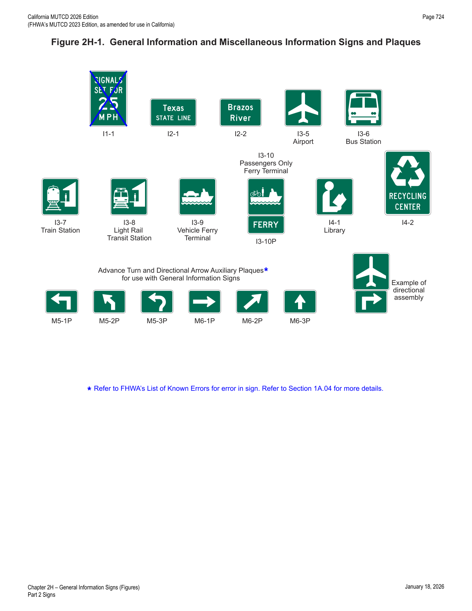
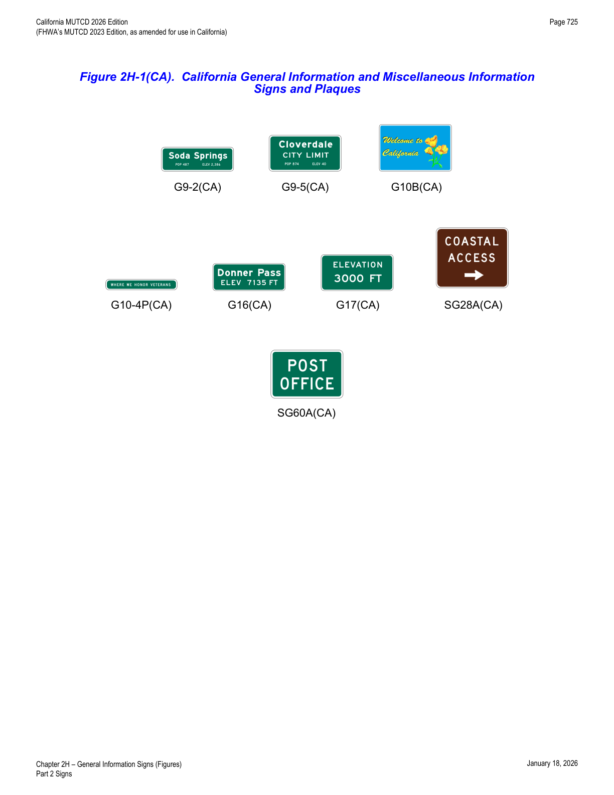
2H.02Sizes of General Information Signs
- 02Section 2A.07 contains information regarding the applicability of the various columns in Table 2H-1.
- 03Signs larger than those shown in Table 2H-1 may be used (see Section 2A.07), except where a maximum allowable size is specified.
2H.03Airport Signs
- 01Guide signs for commercial service airports and general aviation airports may be provided from the nearest Interstate, other freeway, or conventional highway intersection directly to the airport, normally not to exceed 15 miles. The Airport (I3-5) symbol sign (see Figure 2H-1) along with a supplemental plaque may be used to indicate the specific name of the airport. An Airport symbol sign, with or without a supplemental name plaque or the word AIRPORT, and an arrow may be used as a trailblazer.
- 02Airport pictographs or other graphical representation of the specific airport shall not be used with or in place of the specific airport name on guide signs.
- 03If airport guide signs are used, adequate trailblazer signs should be used to provide motorist direction to the airport.
- 04Location and placement of all airport guide signs depends upon the availability of longitudinal spacing on highways.
- 05Figure 2D-39 shows an example of the guide signing that is typically used for a large commercial airport.
- 06The Airport (I3-5) symbol sign may be used for large or small commercial airports and airports which do not accommodate large commercial jet aircraft.
2H.04Traffic Signal Speed Sign (I1-1)
- 01The Traffic Signal Speed (I1-1) sign (see Figure 2H-1) displaying the legend SIGNALS SET FOR XX MPH may be used to indicate a section of street or highway on which the traffic control signals are coordinated into a progressive system timed for a specified speed at all hours during which they are operated in a coordinated mode.
- 02If different system progression speeds are set for different times of the day, a changeable message element may be used for the numerals of the Traffic Signal Speed sign. If the system is operated in coordinated mode only during certain times, a blank-out version of the Traffic Signal Speed sign may be used to display the entire message only during those times.
- 03An electronic-display changeable section of the Traffic Signal Speed sign shall be a white legend on a black opaque or green background.
- —If used, the Traffic Signal Speed sign should be mounted as near as practical to each intersection where the timed speed changes, and at intervals of several blocks throughout any section where the timed speed remains constant.
- 04The Traffic Signal Speed (I1-1) sign is not used in California because its displayed speed reflects an internal signal timing parameter rather than information intended for motorists.
In practice: this is a rare instance in the manual where California affirmatively does not use a federally-defined sign — engineers should not expect to see I1-1 signs in the field.
2H.05Jurisdictional Boundary Signs (I2-1)
- 01The Jurisdictional Boundary (I2-1) sign may be used to mark the location of the jurisdictional boundary of a State, county, or municipality or the limits of an unincorporated municipal-level community, federally recognized Tribal Nation, or governmental district where legal jurisdiction, road maintenance responsibility, or emergency response obligation changes.
- 01aThe WHERE WE HONOR VETERANS (G10-4P(CA)) sign may be used below the Jurisdictional Boundary sign (I2-1) in reference to a county line. Refer to SHC § 1978.
- 02If used, the Jurisdictional Boundary sign should be located at or as near as practicable to the jurisdictional boundary without interfering with higher-priority traffic control devices. Notices of statutes or local ordinances should be located separately using regulatory signs (see Chapter 2B).
- 03If used for an unincorporated community, the community should be one that is readily identifiable on official maps and be consistent with postal mailing addresses.
- 04In accordance with Section 2H.01, the Jurisdictional Boundary sign shall be rectangular in shape and shall have a white legend on a green background. The sign shall display only the name of the State, county, municipality, federally recognized Tribal Nation, or other identifiable community, and an appropriate legend such as ENTERING, STATE LINE, County, or the municipal classification.
- 05Names of elected officials or promotional messages, such as notable accomplishments or claims, shall not be displayed on a Jurisdictional Boundary sign or added as a supplemental sign or plaque.
- 06A pictograph representing the jurisdiction may be displayed on the Jurisdictional Boundary sign.
- 07If a pictograph is displayed on the Jurisdictional Boundary sign, it shall be the official seal of the jurisdiction and shall comply with the provisions of Section 2A.04. The pictograph shall be placed to the left of the legend. The height of the pictograph shall not exceed 2 times the height of the initial upper-case letter of the principal legend.
- 08Signs should not be used to identify the boundaries of special-purpose governmental districts, such as school districts, sanitary districts, or improvement districts, as such signs are generally promotional in nature and do not provide navigational or orientation assistance in conjunction with official maps that are available to the general public.
- 09Section 2H.07 contains information on State Welcome signs.
Unincorporated Community and City Limit (G9-2(CA) and G9-5(CA)) Signs
- 10The Unincorporated Community (G9-2(CA)) and City Limit (G9-5(CA)) signs shall be used to mark the limits of cities and to identify unincorporated towns. Refer to SHC § 101.1.
- 11The G9-2(CA) signs should be placed on the right, as close as practical to the outer town limits of unincorporated towns, facing traffic entering the named town.
- 12The G9-5(CA) sign should be placed on the right, as close as practical to the outer city limits of incorporated cities, facing traffic entering the named city.
- 13The population may be obtained from: (A) the Federal census, (B) the California Dept. of Finance, (C) the County Board of Supervisors, or (D) the County Planning Commission.
- 14The elevation shown may be that of the courthouse, post office, railroad station, or benchmark in the central district of the city.
- 15On state highways Caltrans may place the state's 9-1-1 emergency telephone number on county, city, and town limits signs. Refer to § 101.1 of the SHC.
- 16Caltrans, under certain conditions, shall replace any city limit signs. Refer to §§ 101.2 and 101.4 of the SHC.
- 17If a city or community desires to install a distinctive type city limits or "Welcome" sign on conventional highways at its city limits in place of the standard G9-5(CA) sign, the following criteria should be followed:
- The signs shall be installed by local authorities at no expense to the State, and an approved encroachment permit will be obtained prior to installation. They shall be maintained by the permittee to the satisfaction of the permitter. (Standard)
- Such signs shall be installed in accordance with current Caltrans practices. (Standard)
- Signs shall be of reasonable size and proportional to other guide signs in the area. (Standard)
- Signs shall be positioned so they do not obstruct the view of official traffic control devices. (Standard)
- No moving or flashing displays or advertising of any kind will be permitted. (Standard)
- No sign shall encroach over the highway. (Standard)
- Political jurisdiction logos may be displayed on the city limit signs, but the predominant characteristics of the sign will be white legend on a green rectangular shaped background. Distinctive type city limit signs not conforming to the above may remain in place until normal replacement is required. (Option)
2H.06Geographical Feature Signs (I2-2)
- 01The Geographical Feature (I2-2) sign may be used to mark the locations of land features such as river or stream crossings, and summits, that are identifiable on maps or serve as landmarks in providing navigational orientation or reference to the road user.
- 01aThe Geographical Feature (I2-2) sign may be used to identify bridges or structures across rivers and creeks and provide motorist orientation that is not otherwise included in the primary signing.
- 01bThe I2-2 sign should be used on freeways to identify major river crossings.
- 02If used, the Geographical Feature sign should display only the name of the geographical feature. Additional information that is unnecessary for navigational or orientation purposes, such as watershed or tributary names, should not be displayed on the sign.
Elevation (G16(CA) and G17(CA)) Signs
- 03The Mountain Pass Elevation (G16(CA)) sign may be used at the summit to inform the public of a mountain pass name and elevation.
- 04The G16(CA) sign should be placed facing traffic in each direction on the right.
- 05The Elevation (G17(CA)) sign may be used to inform motorists of changes in elevation. Feet will be shown in multiples of 1,000 feet above sea level, and multiples of 100 feet below sea level.
- 06The G17(CA) sign should be placed facing traffic in each direction on the right.
2H.07State Welcome Signs
- 01The design, placement, and function of State Welcome signs that are used to identify State lines differ from Jurisdictional Boundary (I2-1) signs (see Section 2H.05). Because of these differences, it is necessary to distinguish State Welcome signs from State line Jurisdictional Boundary signs.
- 02A State Welcome sign may be located at or in the vicinity of the State boundary except as prohibited in Paragraph 4 of this Section.
- 03State Welcome signs may display the State seal or the State flag, the officially-adopted State motto or slogan, and the name of the Governor, in addition to the State name. State Welcome signs may use legend and background colors that provide adequate visual contrast rather than the standard sign colors.
- 04State Welcome signs shall be located separate from other signs where they will not interfere with or detract from other traffic control devices.
- 05State Welcome signs shall not display changeable or other electronic-display messages (see Chapter 2L). State Welcome signs shall not display messages that emulate promotional advertising of any type. State Welcome signs shall not incorporate Acknowledgment signs or messages (see Section 2H.13), or business identification sign panels or logos (see Section 2J.03) into their legends or assemblies. In accordance with Section 2A.04, telephone numbers, Internet addresses, and e-mail addresses, including domain names and uniform resource locators (URLs), and scanning graphics for the purpose of obtaining information shall not be displayed in the legends of State Welcome signs or on their supports.
- 06State Welcome signs should be located farther from the edge of the roadway than other traffic control devices.
- 07The maximum size of a State Welcome sign should be consistent with the prevailing size of other guide signs based on the roadway type.
Welcome to California (G10B(CA)) Sign
- 08The Welcome to California (G10B(CA)) sign should be used to indicate the California State line. The sign should be placed on the right near the State boundary facing traffic entering the State.
2H.08Future Interstate Corridor Signs (I2-4 and I2-4a)
- 01The Future Interstate Corridor (I2-4 and I2-4a) signs (see Figure 2H-2) may be used sparingly along an existing route that will be reconstructed as an Interstate route or along an existing route adjacent to a corridor through which an Interstate route will be constructed, in accordance with the Policy and Conditions stated in 23 CFR 470, Appendix C.
- 02Where the route number has been approved by the FHWA, either the I2-4 or I2-4a sign may be used.
- 03The I2-4a sign shall not be used where the route number has not been approved by the FHWA.
- 04Future Interstate Corridor signs shall not be located where they could interfere with or detract from other traffic control devices. If used, Future Interstate Corridor signs shall be installed as independent, post-mounted sign assemblies.
- 05Future Interstate Corridor signs shall not imply that an existing route has already been designated and marked as an Interstate route. Signs indicating that an existing route is designated as a future Interstate route or corridor shall not provide directional or distance information. Route Sign assemblies (see Section 2D.29) of any type shall not be used to sign a route as a future Interstate or other route. The Interstate route marker, or likeness thereof, shall not be displayed on the Future Interstate Corridor signs.
- 06Future Interstate Corridor signs should be limited to strategic locations, such as at the beginning of the designated route or corridor, or beyond interchanges connecting from existing Interstate highways.
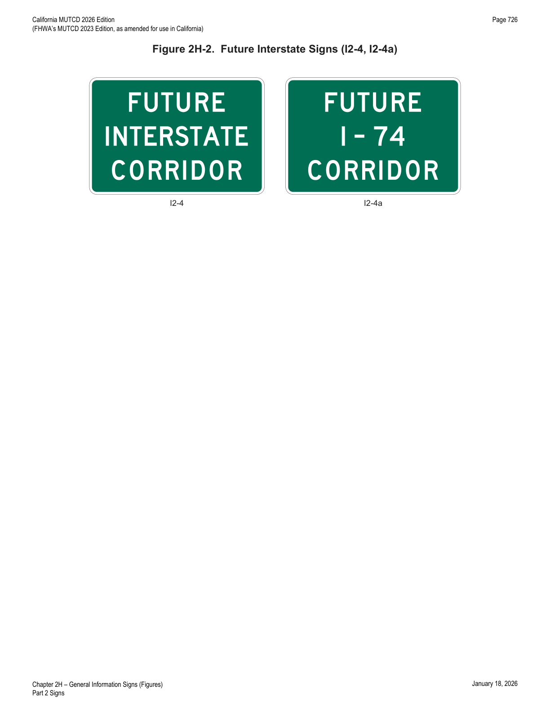
2H.09Project Information Sign (I2-5)
- 00For Construction Project Funding Identification Signs, please refer to Section 6I.101(CA).
- 01The Project Information (I2-5) sign (see Figure 2H-3) provides limited information to road users about a highway construction project on which work is imminently forthcoming or ongoing.
- 02The Project Information sign legend shall be limited to the following project information: (A) the roadway name or route number, (B) a brief description or title of the project, (C) the completion date expressed in either a month or season (Spring, Summer, Fall, or Winter), and (D) the agency name.
- 03Project Information signs installed more than one week prior to commencement of work may include a start date.
- 04Project Information signs shall not be installed more than one month prior to the commencement of work. When installing Project Information signs prior to the commencement of work, the jurisdiction shall have a policy on when the Project Information signs are to be installed. Project Information signs shall be removed at the conclusion of work on the project, even if the final inspection or project closeout has not yet occurred.
- 05The number of Project Information signs shall be limited to one per direction of travel on the roadway on which the project is based. The location of the Project Information sign shall not interfere with the temporary traffic control zone devices.
- 06The Project Information sign shall have a white legend on a green background and shall not display Internet addresses, e-mail addresses, or telephone numbers (see Section 2A.04).
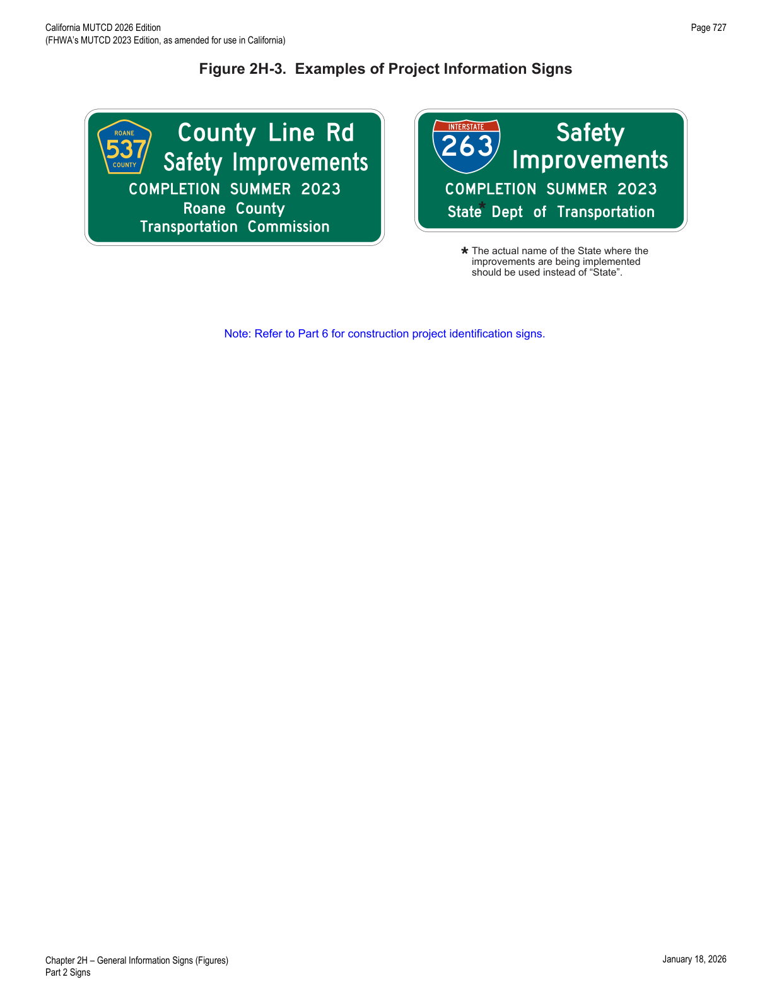
2H.10Grade-Separated Roadway Identification Signs (I2-3 and I2-3a)
- 01The Grade-Separated Roadway Identification (I2-3 and I2-3a) signs (see Figure 2H-4) may be used to identify a grade separation of another highway or other transportation facility such as a railway, bikeway, or pathway.
- 02Except as provided in Paragraph 4 of this Section, when used to identify an overcrossing structure, the I2-3 sign should be mounted above the travel lanes if no vertical clearance signs are present. If vertical clearance signs are present, the I2-3 sign should be mounted above the shoulder (right or left) of the highway below, or over the median.
- 03When used to identify an undercrossing structure, the I2-3 or I2-3a sign should be post-mounted in advance of the structure as near to it as practicable.
- 04When used to identify an overcrossing structure, the I2-3 or I2-3a sign may be post-mounted in front of an overcrossing or may be mounted to the abutment of the overcrossing facing approaching traffic.
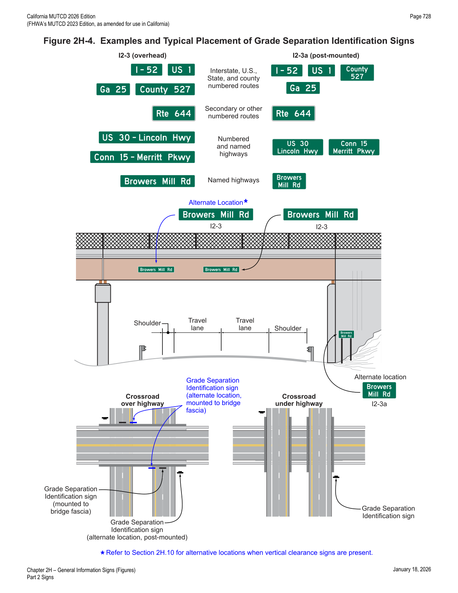
2H.11Reference Location Signs (D10-1 through D10-3) and Intermediate Reference Location Signs (D10-1a through D10-3a)
- 01There are two types of reference location signs: (A) Reference Location (D10-1 through D10-3) signs (see Figure 2H-5) show an integer distance point along a highway, and (B) Intermediate Reference Location (D10-1a through D10-3a) signs (see Figure 2H-6) show the same information as Reference Location signs, but they also show a tenth-of-a-mile decimal so that they can be installed between integer distance points along a highway.
- 02Except when Enhanced Reference Location signs (see Section 2H.12) are used instead, Reference Location (D10-1 through D10-3) signs shall be placed on all expressway facilities that are located on a route where there is reference location sign continuity and on all freeway facilities to assist road users in estimating their progress, to provide a means for identifying the location of emergency incidents and traffic crashes, and to aid in highway maintenance and servicing.
- 03Reference Location (D10-1 through D10-3) signs may be installed along any section of a highway route or ramp to assist road users in estimating their progress, to provide a means for identifying the location of emergency incidents and traffic crashes, and to aid in highway maintenance and servicing.
- 04To augment the Reference Location sign system, Intermediate Reference Location (D10-1a through D10-3a) signs, which show the tenth of a mile with a decimal point, may be installed at one tenth of a mile, two tenths of a mile, or one-half mile intervals.
- 05When Intermediate Reference Location (D10-1a through D10-3a) signs are used to augment the reference location sign system, the reference location sign at the integer mile point shall display a decimal point and a zero numeral.
- 06Reference Location and Intermediate Reference Location signs shall have a minimum mounting height of 4 feet, measured vertically from the bottom of the sign to the elevation of the near edge of the roadway, and shall not be governed by the mounting height requirements prescribed in Section 2A.15.
- 07The distance numbering shall be continuous for each route within a State, except where overlaps occur (see Section 2E.22). Where routes overlap, reference location sign continuity shall be established for only one of the routes. If one of the overlapping routes is an Interstate route, that route shall be selected for continuity of distance numbering.
- 08The route selected for continuity of distance numbering shall also have continuity in interchange exit numbering (see Section 2E.22).
- 09On a route without continuity of distance numbering, the first reference location sign beyond the overlap should indicate the total distance traveled on the route (including on the portion that did not have continuity of distance numbering) so that road users will have a means of correlating their travel distance between reference location signs with that shown on their odometer.
- 10For divided highways, the distance measurement shall be made on the northbound and eastbound roadways. The reference location signs for southbound or westbound roadways shall be set at locations directly opposite the reference location signs for the northbound or eastbound roadways.
- 11Zero distance shall begin at the south and west State lines, or at the south and west terminus points where routes begin within a State.
- 12Except as provided in Paragraph 13 of this Section, reference location signs shall be installed on the right-hand side of the roadway.
- 13Where conditions limit or restrict the use of reference location signs on the right-hand side of the roadway, they may be installed in the median. On two-lane conventional roadways, reference location signs may be installed on one side of the roadway only and may be installed back-to-back. Reference location signs may be placed up to 30 feet from the edge of the pavement.
- 14If a reference location sign cannot be installed in the correct location, it may be moved in either direction as much as 50 feet.
- 15If a reference location sign cannot be placed within 50 feet of the correct location, it should be omitted.
- 16In California, reference posts shall be mileage based.
- 17The placement and location of reference posts on State highways shall conform to the database maintained by Caltrans' Division of Traffic Operations for reference posts. This database is different from the TASAS Highway database.
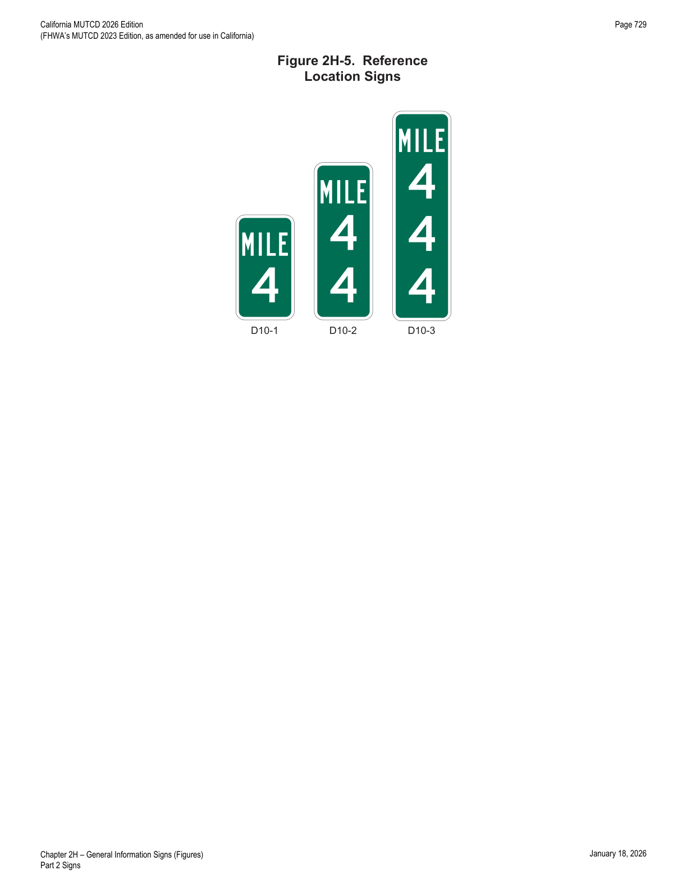
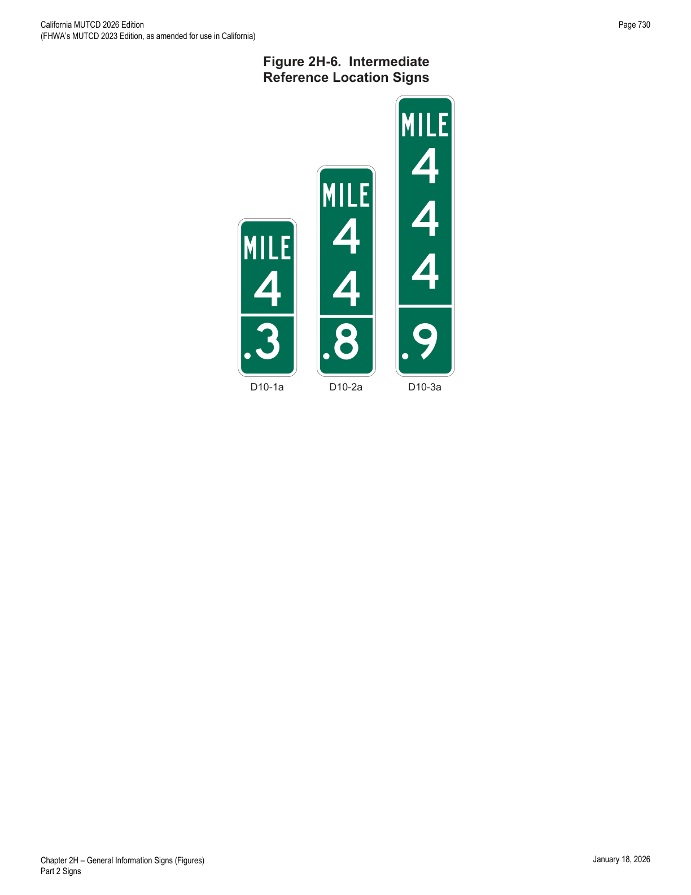
2H.12Enhanced Reference Location Signs (D10-4) and Intermediate Enhanced Reference Location Signs (D10-5)
- 02An Enhanced Reference Location (D10-4) sign, which enhances the reference location sign system by identifying the route, may be placed on freeways or expressways (instead of reference location signs) or on conventional roads.
- 03To augment an enhanced reference location sign system, an Intermediate Enhanced Reference Location (D10-5) sign, which shows the tenth of a mile with a decimal point, may be installed along any section of a highway route or ramp at one tenth of a mile, two tenths of a mile, or one-half mile intervals.
- 04When an Intermediate Enhanced Reference Location (D10-5) sign is used to augment the reference location sign system, the Enhanced Reference Location sign at the integer mile point shall display a decimal point and a zero numeral.
- 05Except as provided in Paragraph 6 of this Section, if enhanced reference location signs are used, they shall be vertical signs having a green background with a white legend and border, except for the route shield, which shall be the standard color and shape. The top line shall display the cardinal direction for the roadway. The second line shall display the applicable route shield for the roadway. The third line shall identify the mile reference for the location and the bottom line of the Intermediate Enhanced Reference Location sign shall give the tenth of a mile reference for the location preceded by a decimal point.
- 05aRefer to FHWA's List of Known Errors for error in Paragraph 5 text. Refer to Section 1A.04 for more details.
- 06The provisions in Section 2H.11 regarding mounting height, distance numbering and measurements, mileage-based requirements, sign continuity, and placement with respect to the right-hand shoulder and/or median for reference location signs also apply to enhanced reference location signs.
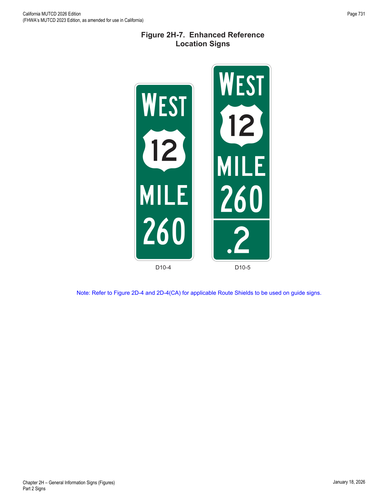
2H.13Acknowledgment Signs and Plaques (I20 Series)
- 01Acknowledgment signs and plaques (see Figure 2H-8) are a way of recognizing a company, business, or volunteer group that provides or sponsors a highway-related service. Acknowledgment signs include sponsorship signs for adopt-a-highway litter removal programs, maintenance of a parkway or interchange, and other highway maintenance or beautification sponsorship programs.
- 02A State or local highway agency that elects to have a sponsorship acknowledgement program should develop a policy on Acknowledgment signs and plaques. The policy should require that eligible sponsoring organizations comply with State laws prohibiting discrimination based on race, religion, color, age, sex, national origin, and other applicable laws.
- 03The State or local acknowledgment sign policy shall include all of the provisions regarding placement and design of Acknowledgment signs and plaques that are contained in this Section.
- 04Because regulatory, warning, and guide signs have a higher priority, Acknowledgment signs shall only be installed where adequate spacing is available between the Acknowledgment sign and other higher priority signs. Acknowledgment signs shall not be installed in a position where they would obscure the road users' view of other traffic control devices.
- 05Acknowledgment signs shall not be installed at any of the following locations: (A) on the front or back of, adjacent to, or around any other traffic control device, including traffic signs, highway traffic signals, and changeable message signs; (B) on the front or back of, adjacent to, or around the supports or structures of other traffic control devices, or bridge piers; or (C) at key decision points where a road user's attention is more appropriately focused on other traffic control devices, roadway geometry, or traffic conditions, including exit and entrance ramps, merging or weaving areas, lane terminations, intersections, grade crossings, toll plazas, temporary traffic control zones, and areas of limited sight distance.
- 06Acknowledgment signs and plaques shall have a white legend and border on a blue background. Acknowledgment signs shall be independent post-mounted roadside installations only and shall not be mounted overhead.
- 07An Acknowledgment sign may be used to acknowledge the sponsor of a rest area or welcome center.
- 08Acknowledgment signs for a rest area, when located on the highway mainline, shall be limited to one sign per direction of travel from which the rest area is accessible, shall be located at least 500 feet from other traffic control devices, and shall not display names or representations of specific products or services provided by the sponsor within the rest area. Acknowledgment signs for rest areas shall display the legend REST AREA as the program activity, such as REST AREA SPONSORED BY. In accordance with Paragraph 5 of this Section, the Rest Area and Welcome Center Acknowledgment (I20-4 and I20-4a) signs shall not be combined in the same sign assembly with or substitute for the Rest Area General Service guide signs (see Section 2I.05).
- 09An additional Acknowledgment sign may be used within the rest area provided that it is not visible from the highway mainline or ramps to and from the rest area.
- 10If a State has officially adopted and is actively promoting a program to encourage the use of safety rest areas through the use of a program name, then that program name may be displayed in smaller lettering below the legend REST AREA on the Rest Area Acknowledgment sign.
- 11Program names or slogans, as described in Paragraph 14 of this Section, shall not be displayed on the Rest Area General Service guide signs or other types of traffic signs.
- 12The minimum spacing between Acknowledgment signs and any other traffic control signs, except parking regulation signs, should be: (A) 150 feet on roadways with speed limits of less than 30 mph, (B) 200 feet on roadways with speed limits of 30 to 45 mph, and (C) 500 feet on roadways with speed limits greater than 45 mph.
- 13If the placement of a newly-installed higher-priority traffic control device, such as a higher-priority sign, a highway traffic signal, or a temporary traffic control device, conflicts with an existing Acknowledgment sign, the Acknowledgment sign should be relocated, covered, or removed.
- 14State or local highway agencies may use their own pictograph and/or a brief jurisdiction-wide program name, such as "Adopt-A-Highway" or "Litter Removal," as part of any portion of the Acknowledgment sign, provided that the signs comply with the provisions for shape, sign and legend size, color, and lettering style in this Chapter and in Chapter 2A.
- 15Acknowledgment signs should clearly indicate the type of highway services provided by the sponsor.
- 16In addition to the general provisions for signs described in Chapter 2A and the sign design principles covered in the "Standard Highway Signs" publication, Acknowledgment sign and plaque designs developed by State or local highway agencies shall comply with the following provisions:
- Neither the sign or plaque design nor the sponsor acknowledgment name or logo shall contain any contact information, directions, slogans (other than a brief jurisdiction-wide program name, if used), telephone numbers, e-mail or Internet addresses, including domain names and URLs, metadata tags ("hash-tags"), or QR codes, bar codes, or similar scanning graphics;
- Except for the sponsor acknowledgment logo, all of the lettering shall be in upper-case letters of the Standard Alphabets;
- If a logo, instead of a word legend, is used to represent the sponsor, the logo shall be the primary logo that identifies the sponsoring entity. Secondary or alternate logos, slogans, products, mascots, spokespersons, or other items associated with the sponsoring entity's commercial advertising or marketing shall not be displayed on Acknowledgment signs or plaques;
- The area reserved for the sponsor acknowledgment name or logo shall not be located at the top of the sign or plaque, shall be a maximum of 8 square feet in area, and shall not exceed ⅓ of the total area of the sign;
- The entire sign display area of an Acknowledgment sign assembly shall not exceed 24 square feet;
- The sign or plaque shall not contain any messages, lights, symbols, or logos that resemble any official traffic control devices;
- The sign or plaque shall not contain any external or internal illumination, light-emitting diodes, luminous tubing, fiber optics, luminescent panels, or other flashing, moving, or animated features;
- The sign or plaque shall not distract from official traffic control messages such as regulatory, warning, or guidance messages;
- The area of the plaque shall not exceed the lesser of ⅓ the area of the General Service sign below which it is mounted or 24 square feet;
- The plaque size shall be based on the standard sizes specified in Table 2H-1. If the size of the General Service sign is oversized for its application (greater than the size specified for the corresponding roadway application in Table 2H-1), or if the size of the General Service sign increases due to modification of the sign legend, a corresponding increase in the size of the plaque shall not be allowed; and
- The sign or plaque shall not display promotional or contact information about the agency's sponsorship program, including if the sign or plaque does not currently display a sponsor.
- 17If a specific outlet of a business with multiple locations in the same area is the sponsoring entity, such as a franchisee, the area reserved for the sponsor acknowledgment name or logo may include the name of the municipality or neighborhood in which the sponsoring entity is located.
- 18An Acknowledgment plaque may be mounted below the following General Service signs to acknowledge the sponsor of a corridor-based or region-based highway-related service: (A) Radio-Weather Information (D12-1) sign (see Section 2I.09); (B) Radio-Traffic Information (D12-1a) sign (see Section 2I.09); (C) TRAVEL INFO CALL 511 (D12-5 and D12-5a) signs (see Section 2I.12); and (D) Roadside Assistance (D12-6) sign (see Section 2I.13).
- 19An Acknowledgment plaque shall not be mounted in conjunction with any other sign or traffic control device. An Acknowledgment plaque shall not be used alone or without one of the General Service signs specified in Paragraph 18 of this Section.
- 20The general restrictions on the type of content allowed for display on Acknowledgment signs (see Paragraph 16 of this Section) shall apply to the legends of Acknowledgment plaques.
- 21The requirements in Section 2H.13 do not apply to State highways.
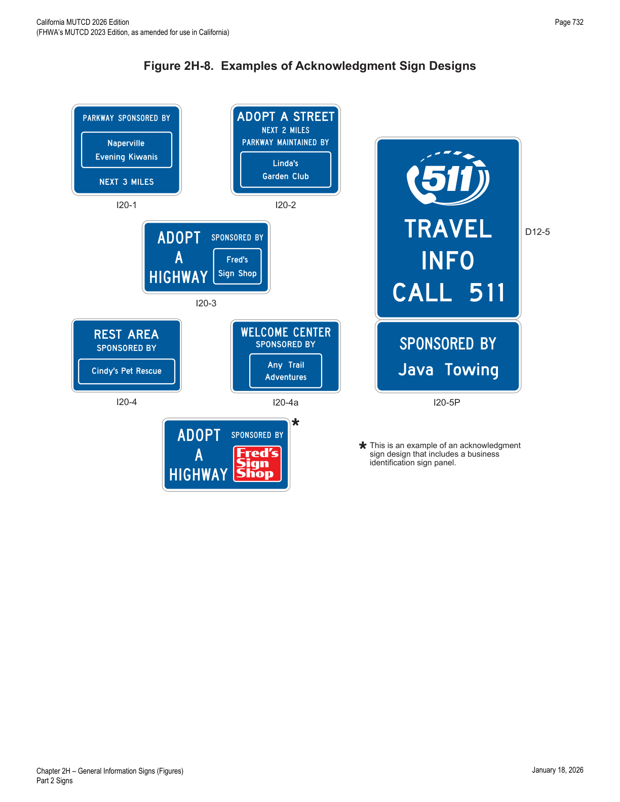
2H.14Alternative Fuels Corridor Sign (D9-19)
- 01The Alternative Fuels Corridor (D9-19) sign (see Figure 2H-9) may be used to inform motorists of an alternative fuels corridor highway segment that has been designated by the Secretary of Transportation as "Corridor Ready."
- 02Alternative Fuels Corridor signs shall only be used to designate alternative fuels corridor highway segments that have been designated by the Federal Highway Administration as "Corridor Ready." The appropriate General Service signs or plaques identifying the alternative fuels available in the corridor shall be included with the Alternative Fuels Corridor sign in a sign assembly. The alternative fuel services for an alternative fuels corridor shall be limited to electric vehicle charging, compressed natural gas, liquid natural gas, liquified petroleum, and hydrogen.
- 03The General Service (D9-11a, D9-11b, D9-11d, D9-11e, and D9-11f) symbol signs for use with an Alternative Fuels Corridor sign are shown in Figure 2I-1.
- 04Alternative Fuels Corridor signs shall only be post-mounted on the side of the road and shall not be mounted overhead.
- 05State or agency variations of the Alternative Fuels Corridor sign shall not be allowed. Acknowledgments of sponsors shall not be allowed in Alternative Fuels Corridor sign assemblies.
- 06Except as provided in Paragraph 7 of this Section, Alternative Fuels Corridor signs shall be limited to one sign at or near the beginning of the alternative fuels corridor in each direction of travel.
- 07For long corridors, such as segments connecting control cities or major urban areas, additional signs may be located beyond major intersections or major interchanges following the typical post-interchange sign sequence.
- 08The beginning of an alternative fuels corridor may be indicated with a BEGIN (M4-14P) plaque (see Figure 2H-9) with a white legend and border on a blue background mounted above the alternative fuels corridor sign in the sign assembly.
- 08aRefer to FHWA's List of Known Errors for error in Paragraph 8 text. Refer to Section 1A.04 for more details.
- 09The end of an alternative fuels corridor may be indicated with an END (M4-6P) plaque (see Figure 2H-9) with a white legend and border on a blue background mounted above the Alternative Fuels Corridor sign in the sign assembly.
- 10The General Service signs shall not be used in the sign assembly indicating the end of a corridor.
- 11When the availability of one or more of the alternative fuel facilities discontinues in an alternative fuels corridor, the LAST IN CORRIDOR (W16-19P) plaque (see Figure 2H-9) shall be included on the last General Service directional assembly on the approach to the interchange or intersection.
- 12When the availability of one or more of the alternative fuel facilities discontinues in an alternative fuels corridor, an Alternative Fuels Corridor sign with accompanying General Service signs indicating the types of fuels still available in the corridor may be provided beyond the intersection or interchange where the last discontinued fuel facilities were available.
- 13When the distance between electric vehicle (EV) charging services in an alternative fuels corridor is greater than 50 miles, the Next EV Charging (D9-17a) sign (see Figure 2H-9) may be located after the EV charging directional assembly, but before the EV charging service exit or turn, to inform road users of the extended distance to the next EV charging service.
- 14The Alternative Fuels Corridor (D9-19) sign shall not be used as a directional sign in a directional assembly, or be combined with other signs, except as provided in this Section.
- 15Up to three General Service symbol signs arranged horizontally displaying the alternative fuels available in the designated corridor may be installed below the Alternative Fuels Corridor sign (see Figure 2H-10).
- 16The size of the General Service symbol signs for the alternative fuels available shall not exceed 18 x 18 inches when mounted with the 24 x 24-inch Alternative Fuels Corridor sign and 24 x 24 inches when mounted with the 36 x 36-inch Alternative Fuels Corridor sign.
- 17When the number of eligible alternative fuels available in the corridor exceeds three, a separate plaque with the two-letter or three-letter designations (D9-19aP or D9-19bP) of each of the fuels available (see Figure 2H-9) should be used in place of the General Service symbol signs.
- 18When the Alternative Fuels Corridor sign is used in a designated corridor on a freeway or expressway, the applicable General Service signs shall be installed on the approach to an interchange in the corridor from which the designated fuel services are available. If the services are not visible from the ramp of a single-exit interchange, the service signing shall be repeated at the intersection of the exit ramp and the crossroad (see Figure 2H-10). Where the alternative fuel facility is not located along the crossroad, additional General Service directional assemblies shall be installed in advance of each subsequent turn to reach the facility (see Figure 2H-11).
- 19Because regulatory, warning, and guide signs are necessary for safe and efficient movement of traffic, they have a higher priority in placement location over Alternative Fuels Corridor signs.
- 20Alternative Fuels Corridor sign assemblies shall be limited to those locations where adequate spacing is available between the Alternative Fuels Corridor sign and other signs. Alternative Fuels Corridor signs shall not be installed in a location where they might distract driver's attention from other traffic control devices or the roadway in a complex roadway environment. If the placement of a newly-installed, higher-priority traffic control device conflicts with an existing Alternative Fuels Corridor sign, the Alternative Fuels Corridor sign shall be relocated, covered, or removed.
- 21Alternative Fuels Corridor signs shall not be installed on routes other than those officially designated as alternative fuels corridors, even if to provide directional information to such corridors.
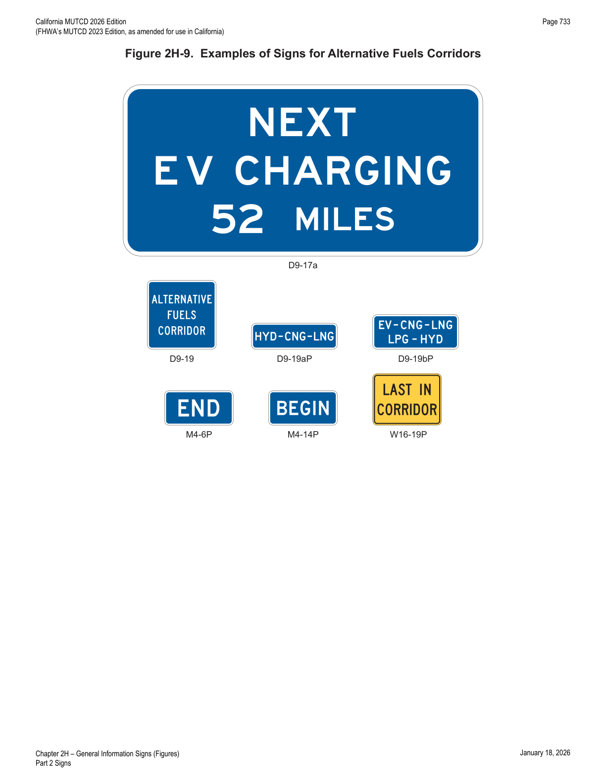
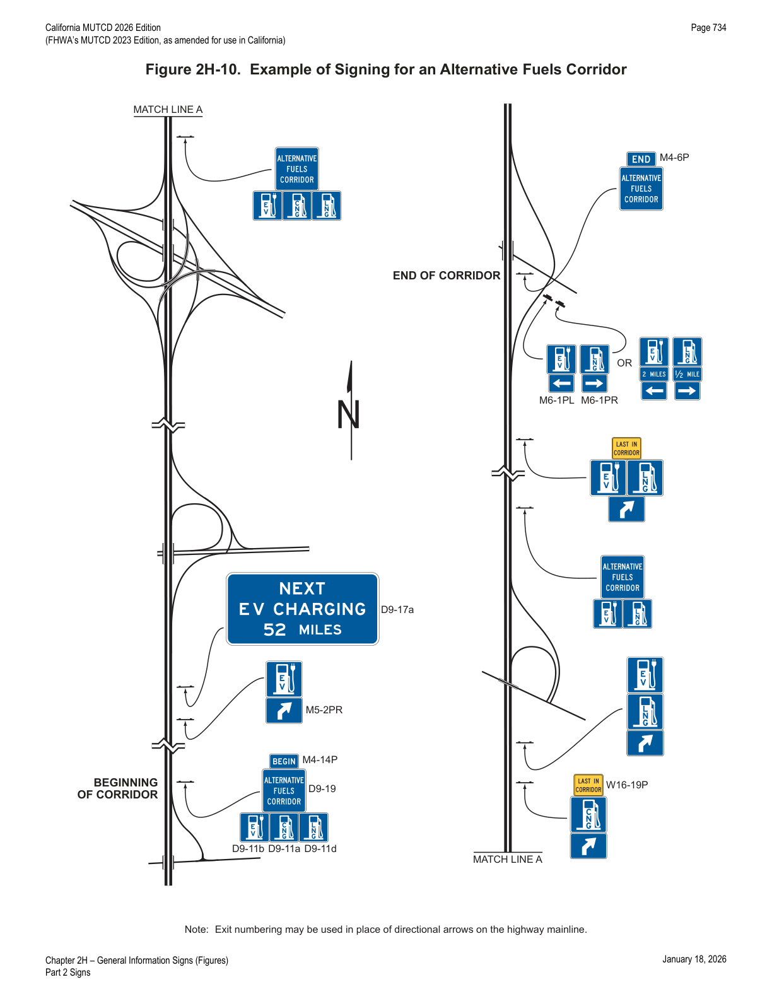
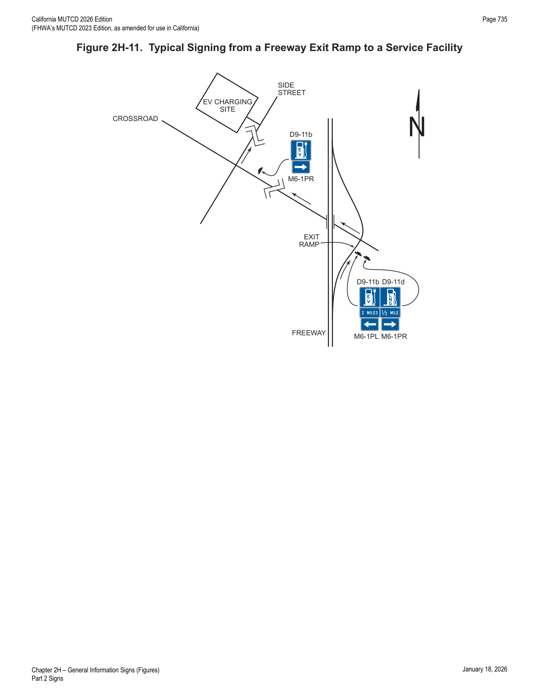
| Sign or Plaque | Designation | Section | Conventional Road | Freeway or Expressway |
|---|---|---|---|---|
| Alternative Fuels Corridor | D9-19 | 2H.14 | 24 x 24 | 36 x 36 |
| Alternative Fuels Corridor (1 line) (plaque) | D9-19aP | 2H.14 | 30 x 9 | 42 x 12 |
| Alternative Fuels Corridor (2 lines) (plaque) | D9-19bP | 2H.14 | 30 x 12 | 42 x 18 |
| Reference Location (1 digit) | D10-1 | 2H.11 | 10 x 18 | 12 x 24 |
| Intermediate Reference Location (2 digits) | D10-1a | 2H.11 | 10 x 27 | 12 x 36 |
| Reference Location (2 digits) | D10-2 | 2H.11 | 10 x 27 | 12 x 36 |
| Intermediate Reference Location (3 digits) | D10-2a | 2H.11 | 10 x 36 | 12 x 48 |
| Reference Location (3 digits) | D10-3 | 2H.11 | 10 x 36 | 12 x 48 |
| Intermediate Reference Location (4 digits) | D10-3a | 2H.11 | 10 x 48 | 12 x 60 |
| Enhanced Reference Location | D10-4 | 2H.12 | 12 x 30 | 18 x 54 (O); 18 x 54 |
| Intermediate Enhanced Reference Location | D10-5 | 2H.12 | 12 x 36 | 18 x 60 (O); 18 x 60 |
| Traffic Signal Speed | I1-1 | 2H.04 | 24 x 36 | — |
| Jurisdictional Boundary | I2-1 | 2H.05 | Varies x 18** ; Varies x 24 (O) | Varies x 36**; Varies x 42 (O) |
| Geographical Feature | I2-2 | 2H.06 | Varies x 18**; Varies x 24 (O) | Varies x 36** |
| Grade Separation Identification | I2-3 | 2H.10 | — | Varies x 18 |
| Grade Separation Identification (2 lines) | I2-3a | 2H.10 | — | Varies x 24 |
| Future Interstate Corridor | I2-4 | 2H.08 | 54 x 36 | 72 x 48 |
| Future I-XX Corridor | I2-4a | 2H.08 | 48 x 36 | 66 x 48 |
| Project Information | I2-5 | 2H.09 | 96 x 48 | 156 x 72 |
| Airport | I3-5 | 2H.01 | 24 x 24 | 30 x 30 |
| Bus Station | I3-6 | 2H.01 | 24 x 24 | 30 x 30 |
| Train Station | I3-7 | 2H.01 | 24 x 24 | 30 x 30 |
| Light Rail Transit Station | I3-8 | 2H.01 | 24 x 24 | — |
| Vehicle Ferry Terminal | I3-9 | 2H.01 | 24 x 24 | 30 x 30 |
| Passenger Only Ferry Terminal | I3-10 | 2H.01 | 24 x 24 | 30 x 30 |
| Ferry (plaque) | I3-10P | 2H.01 | 24 x 12 | 30 x 18 |
| Library | I4-1 | 2H.01 | 24 x 24 | — |
| Recycling Center | I4-2 | 2H.01 | 30 x 36 | — |
| Acknowledgment | I20-1 | 2H.13 | 36 x 30* | 72 x 48* |
| Acknowledgment | I20-2 | 2H.13 | 36 x 30* | 72 x 48* |
| Acknowledgment | I20-3 | 2H.13 | 42 x 24* | 96 x 36* |
| Acknowledgment – Rest Area | I20-4 | 2H.13 | 56 x 36* | 72 x 48* |
| Acknowledgment – Welcome Center | I20-4a | 2H.13 | 56 x 36* | 72 x 48* |
| Acknowledgment (plaque) | I20-5P | 2H.13 | Varies x Varies*** | Varies x Varies*** |
| Last In Corridor (plaque) | W16-19P | 2H.14 | 24 x 18 | 24 x 18 |
* Maximum size for the corresponding roadway classification; sign and acknowledgment logo size should be reduced where shorter legends are used. ** Size shown is for the typical sign illustrated in the figure; size should be determined by the number of lines of legend. *** Limitations on Acknowledgment plaque size are provided in Section 2H.13. Larger signs may be used except for I20 series signs and plaques; (O) denotes Oversized.
| Sign or Plaque | Designation | Section | Conventional Road | Freeway or Expressway |
|---|---|---|---|---|
| Unincorporated Community | G9-2(CA) | 2H.05 | VAR x 18 | VAR x 30 |
| City Limit | G9-5(CA) | 2H.05 | VAR x 24 | VAR x 42 |
| Welcome to California | G10B(CA) | 2H.07 | 60 x 36 | 132 x 84 |
| WHERE WE HONOR VETERANS (plaque) | G10-4P(CA) | 2H.05 | 60 x 9 | 90 x 12 |
| Mountain Pass Elevation | G16(CA) | 2H.06 | VAR x 18 | VAR x 36 |
| Elevation | G17(CA) | 2H.06 | 36 x 18 | 72 x 36 |
| Coastal Access | SG28A(CA) | 2H.101(CA) | 30 x 24 | 48 x 36 |
| POST OFFICE | SG60A(CA) | 2H.102(CA) | 36 x 24 | — |
2H.101(CA)Coastal Access (SG28A(CA)) Sign
- 01The Coastal Access (SG28A(CA)) sign may be used to identify only those improved coastal access points selected by the Coastal Commission in accordance with the agreement between the California Coastal Commission and Caltrans dated April 30, 1980.
2H.102(CA)The POST OFFICE (SG60A(CA)) Sign
- 01The POST OFFICE (SG60A(CA)) sign may be used in conjunction with the Advance Turn (M5 series) or Directional Arrow (M6 series) auxiliary plaques to indicate the direction to a local post office which is located off the arterial network.
★ Key Takeaways — Chapter 2H
- General Information signs use a white-on-green color scheme except for State Welcome signs, Acknowledgment signs, and Alternative Fuels Corridor signs, which have their own distinct treatment (Section 2H.01).
- Jurisdictional Boundary (I2-1) and California's G9-2(CA)/G9-5(CA) City Limit/Unincorporated Community signs must not carry promotional messages, elected-official names, or special-district boundaries.
- Reference Location and Intermediate Reference Location signs run on continuous mileage-based numbering measured from south/west State lines, mounted at a minimum 4-foot height, on the right except where median placement is warranted.
- Acknowledgment signs (I20 series) are tightly limited: 24 sq ft assembly maximum, sponsor logo area capped at 8 sq ft (no more than 1/3 of sign area), no URLs/QR codes/illumination, and specific minimum spacing from other traffic signs (150–500 ft depending on speed) — though these requirements do not apply on State highways in California.
- Alternative Fuels Corridor (D9-19) signs may only be used on FHWA "Corridor Ready" designated segments, are limited to electric, CNG, LNG, LPG, and hydrogen fuels, and must never carry sponsor acknowledgments.
- The Traffic Signal Speed (I1-1) sign is defined by the national MUTCD but is explicitly not used in California.